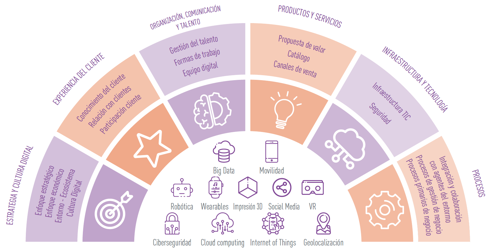

La transformación digital
La transformación digital es el momento en el que una empresa deja de quedarse en diagnóstico o en intención, y empieza a convertir ideas en acciones sostenibles y medibles. No basta con proponer mejoras: hay que planificarlas, ejecutarlas, integrarlas y evaluarlas.
Herramientas esenciales en la transformación digital:
Lienzo de Transformación Digital
Permite organizar visualmente las oportunidades de digitalización en bloques clave: IT/OT, tecnologías habilitadoras, cloud, IA, análisis de datos, ciberseguridad.
Sirve para estructurar qué se puede hacer, cómo y con qué impacto esperamos que opere.
Matriz de Impacto–Esfuerzo
Facilita la priorización de acciones:
- Quick wins (alto impacto, bajo esfuerzo) son las más interesantes para iniciar el cambio.
- Proyectos estratégicos (alto impacto, alto esfuerzo) deben planificarse con cautela.
Plan de Acción
Implica pasar de la propuesta a la estructura real:
- Define responsables, recursos, plazos, indicadores (KPIs) y prioridades.
- Funciona como la guía de ejecución para el proyecto de transformación digital
Integración de sistemas y gestión inteligente de datos
Una transformación digital auténtica exige que los sistemas de la empresa (CRM, ERP, IoT, plataformas de comercio, etc.) se comuniquen entre sí y que los datos fluyan de forma segura, útil y organizada.
La digitalización no sirve de nada si los diferentes sistemas de la empresa siguen funcionando de forma independiente.
Seguimiento y mejora continua
Además de ejecutar es importante medir, comparar, corregir y aprender.
- Los KPIs permiten conocer si las acciones cumplen sus objetivos.
- Las desviaciones deben detectarse a tiempo.
- El equipo debe mantenerse motivado y adaptarse con formación continua.
- Se elaboran informes que muestran el impacto real de las inversiones en digitalización.
Dimensiones de la transformación digital en la pyme
Cuando una pyme decide emprender un proceso de digitalización, debe diseñar una estrategia y un plan que respondan a sus objetivos, prioridades y situación de partida. Esa transformación puede desarrollarse en distintas dimensiones clave:
- Equipamiento técnico, infraestructuras y tecnología: implica invertir en hardware y software, mejorar las infraestructuras y reforzar la ciberseguridad. Destacan tecnologías como el cloud computing, el Big Data y la inteligencia artificial, que permiten dar un salto cualitativo en la gestión y en la toma de decisiones.
- Cambio cultural, organización y comunicación: la transformación digital no es solo tecnológica, también exige un cambio cultural. Se trata de impulsar nuevas formas de trabajar, mejorar la comunicación interna y fomentar la colaboración en todos los niveles de la empresa.
- Experiencia de cliente: redefinir cómo se relaciona la empresa con sus clientes. Esto incluye abrir nuevos canales de interacción digitales, personalizar servicios y mejorar la atención gracias al uso de herramientas tecnológicas.
- Capacitación del personal y atracción de talento: el éxito de la digitalización depende de las personas. Es necesario formar a los trabajadores, empresarios y directivos en competencias digitales, además de atraer nuevo talento capaz de aportar valor en este entorno tecnológico.
- Productos y servicios: la digitalización también transforma lo que la empresa ofrece al mercado. Supone adaptar el negocio, crear nuevas líneas de productos y servicios, e innovar en la manera de presentarlos y comercializarlos.
- Rediseño de procesos internos: los procesos internos deben revisarse para automatizarlos y hacerlos más eficientes, reduciendo costes y tiempos de ejecución. Esto incluye desde la gestión administrativa hasta la producción o la logística.

Imagina que trabajas como asesor digital para una PYME que todavía:
- Usa papel para casi todo.
- No tiene página web ni redes sociales.
- No conecta los datos de sus departamentos.
- No ha formado a su equipo en nuevas tecnologías.
¿Qué tres primeras acciones recomendarías y en qué dimensión entran? Explica por qué.
Incluye tus respuestas en el Archivo Log con la extensión: La transformación digital. OTD